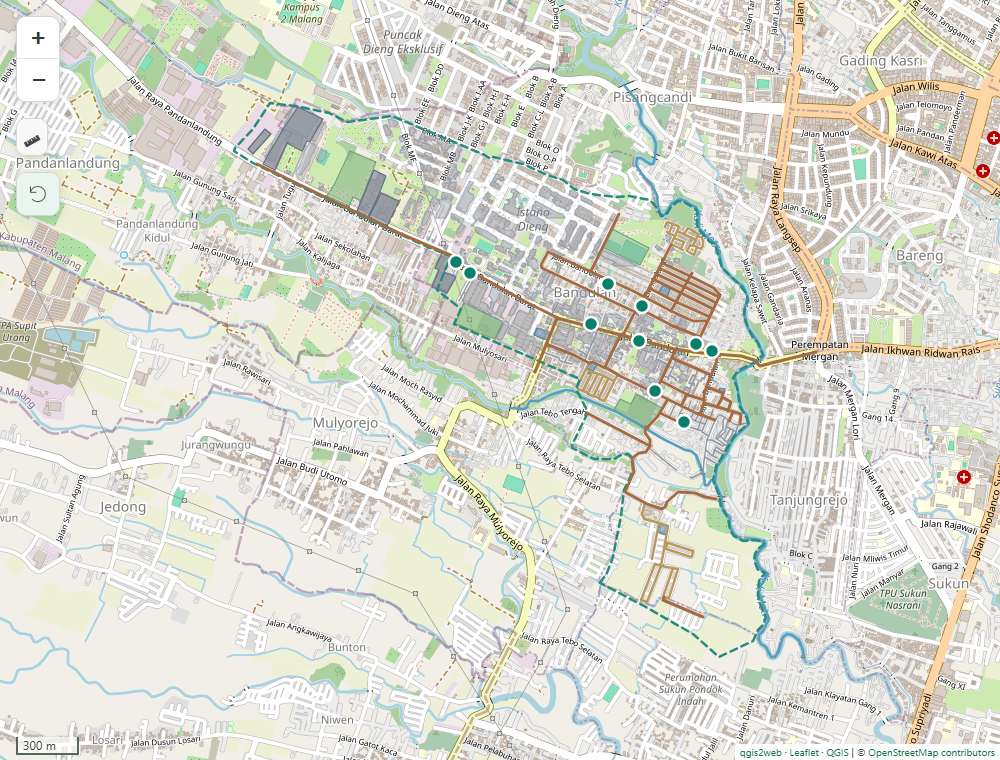
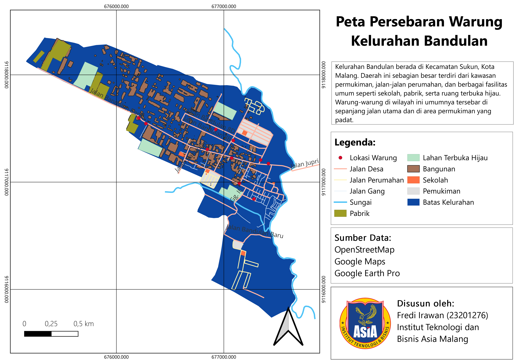

Find a local warung
Search ten mapped locations by name. Select a result or a map marker to see its name and address.
Interactive WebGIS for
Local Business Mapping
A closer look at the places that keep a neighborhood moving. Explore local warungs and the roads, buildings, and green spaces around them.

Pan, zoom, and select a warung. Switch on the layers that matter to you.
Use Search to find a warung by name, or Layers to explore the surrounding geography.
Warungs are part of everyday life in Bandulan. This WebGIS brings their locations together with the neighborhood's roads, land use, and public facilities.
Centered on Kelurahan Bandulan in Kecamatan Sukun, Malang, the project turns a QGIS mapping workflow into an interactive browser experience. Explore how each business sits within the surrounding urban landscape.
Search ten mapped locations by name. Select a result or a map marker to see its name and address.
Explore eleven layers grouped by purpose, from village roads and residential areas to schools and rivers.
Measure distances and areas, reset the map view, or locate yourself to orient your exploration.
Feature counts from the bundled project datasets.
QGIS for preparation. Leaflet for interaction. A lightweight, static frontend for the web.
Organize geographic features and create the thematic layout in QGIS.
Publish the spatial layers as a Leaflet web map with qgis2web.
Add a responsive interface, grouped layers, and readable feature cards.
Serve the static project on GitHub Pages for browser-based exploration.
The QGIS layout brings the study area, legend, and warung distribution together in a single map composition.
View full layout
Start with a warung. Discover the neighborhood around it.
{kind=link}